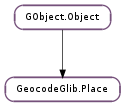

| static | new(name, place_type) |
| static | new_with_location(name, place_type, location) |
| get_administrative_area() | |
| get_area() | |
| get_building() | |
| get_continent() | |
| get_country() | |
| get_country_code() | |
| get_county() | |
| get_icon() | |
| get_location() | |
| get_name() | |
| get_place_type() | |
| get_postal_code() | |
| get_state() | |
| get_street() | |
| get_street_address() | |
| get_town() | |
| set_administrative_area(admin_area) | |
| set_area(area) | |
| set_building(building) | |
| set_continent(continent) | |
| set_country(country) | |
| set_country_code(country_code) | |
| set_county(county) | |
| set_location(location) | |
| set_name(name) | |
| set_postal_code(postal_code) | |
| set_state(state) | |
| set_street(street) | |
| set_street_address(street_address) | |
| set_town(town) |
| Name | Type | Flags | Description |
|---|---|---|---|
| administrative-area | str | r/w | Local administrative area |
| area | str | r/w | A named area such as a campus or neighborhood |
| building | str | r/w | A specific building on a street or in an area |
| continent | str | r/w | Continent |
| country | str | r/w | Country |
| country-code | str | r/w | ISO Country Code |
| county | str | r/w | County |
| icon | Gio.Icon | r/w | An icon representing the the place |
| location | GeocodeGlib.Location | r/w | Location Info |
| name | str | r/w | Name |
| place-type | GeocodeGlib.PlaceType | r/w/c | Place Type |
| postal-code | str | r/w | Postal Code |
| state | str | r/w | State |
| street | str | r/w | Street name |
| street-address | str | r/w | Street Address |
| town | str | r/w | Town |
None
| Name | Type | Access |
|---|---|---|
| parent_instance | GObject.Object | r |
Bases: GObject.Object
All the fields in the GeocodeGlib.Place structure are private and should never be accessed directly.
| Parameters: |
|
|---|---|
| Returns: | a new GeocodeGlib.Place object. Use GObject.Object.unref () when done. |
| Return type: |
Creates a new GeocodeGlib.Place object.
| Parameters: |
|
|---|---|
| Returns: | a new GeocodeGlib.Place object. Use GObject.Object.unref () when done. |
| Return type: |
Creates a new GeocodeGlib.Place object.
| Returns: | The local administrative area of the place. |
|---|---|
| Return type: | str |
Gets the local administrative area of the place.
| Returns: | The continent of the place. |
|---|---|
| Return type: | str |
Gets the continent of the place.
| Returns: | The ISO-3166 country code of the place, in upper case. |
|---|---|
| Return type: | str |
Gets the ISO-3166 country code of the place.
| Returns: | The Gio.Icon representing the place. |
|---|---|
| Return type: | Gio.Icon |
Gets the Gio.Icon representing the place.
| Returns: | The associated location object. |
|---|---|
| Return type: | GeocodeGlib.Location |
Gets the associated location object.
| Returns: | The type of the place. |
|---|---|
| Return type: | GeocodeGlib.PlaceType |
Gets the type of the place.
| Returns: | The postal code of the place. |
|---|---|
| Return type: | str |
Gets the postal code of the place.
| Returns: | The street address of the place. |
|---|---|
| Return type: | str |
Gets the street address of the place.
| Parameters: | admin_area (str) – an administrative area for the place |
|---|
Sets the local administrative area of place to admin_area.
| Parameters: | building (str) – a building |
|---|
Sets the building of place to building.
| Parameters: | continent (str) – a continent for the place |
|---|
Sets the continent of place to continent.
| Parameters: | country (str) – a country for the place |
|---|
Sets the country of place to country.
| Parameters: | country_code (str) – an ISO country code for the place |
|---|
Sets the ISO country code of place to country_code.
| Parameters: | county (str) – a county for the place |
|---|
Sets the county of place to county.
| Parameters: | location (GeocodeGlib.Location) – A location |
|---|
Sets the location of place to location.
| Parameters: | postal_code (str) – a postal code for the place |
|---|
Sets the postal code of place to postal_code.